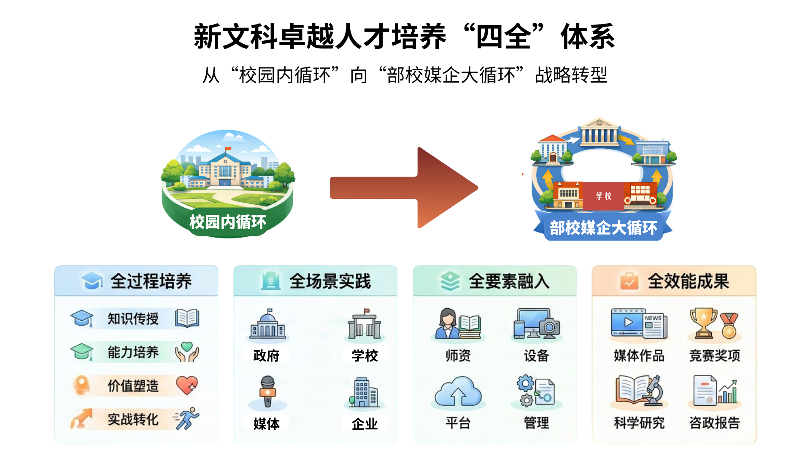

成果简介 / Profile
本成果立足全球传播格局的深刻调整，针对人工智能引发的传播范式跃迁以及主流媒体系统性变革对融合创新型新闻人才的紧迫需求， 依托“部校共建”机制优势，历经十年迭代，构建了卓越新闻传播人才“全过程、全场景、全要素、全效能”的培养体系。
全过程育人，将马新观教育贯穿学生成长，解决价值引领与专业培养的割裂；全场景教学，依托部校共建打破育人“围墙”，实现人才培养与全媒体战场的深度同频；全要素融入，统筹师资、课程、技术与平台资源，将行业前沿生产要素全量引入教学底层逻辑，解决人才素质滞后难题；全效能成果，面向国家和社会亟需，建立从“实战练兵”到“社会评价”的闭环，引导学生完成从单一技能训练到综合创新本领的跨越，最终实现人才培养成果从“校园作业”向“媒体精品、科研成果、咨政建议”的“社会产品”质变。
2014 年9 月，天津市委宣传部与天津师范大学共建新闻传播学院工作全面启动，作为天津市唯一拥有新闻传播学一级博士学位授权点的高校，从理论探索到人才培养都为天津提供了重要示范支撑。2024年 12 月，由天津市委宣传部主办的部校共建新闻学院十周年研讨会在天津师范大学举办。我院领衔总结并向全市各级媒体单位与兄弟高校发布了部校共建机制下新闻传播人才培养的“师大经验”，并引发全市媒体与学界对新闻人才培养的强烈讨论。
十年间，本成果坚持以马克思主义新闻观为魂，深度对接主流媒体系统性变革，通过“知识传授-能力培养-价值塑造-实战转化”的全过程培养、“部校媒企”的全场景实践、“师资、设备、平台、管理”的全要素融入，实现了“媒体作品、竞赛奖项、科学研究、咨政报告”的全效能成果，新闻传播教育从“校园内循环”向“部校媒企大循环”战略转型，形成了新文科卓越人才培养“四全”体系，回答了智媒时代自主培养卓越新闻传播人才的时代命题。
